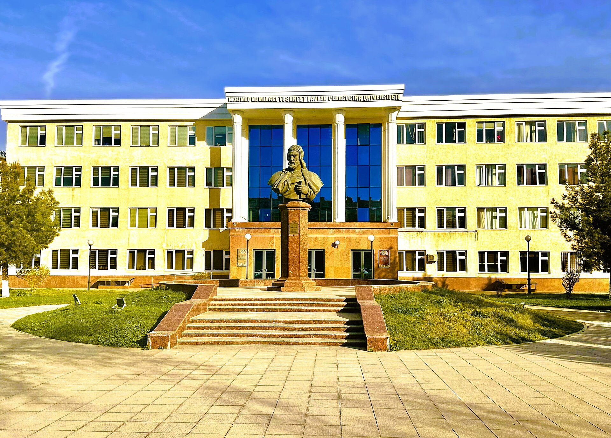

Uzbekistan merges its two education ministries into a single Ministry of Education and Science
A presidential decree merged the Ministry of Preschool and School Education and the Ministry of Higher Education, Science and Innovation into one ministry. State interference in higher education is to be cut and university autonomy expanded.

By decree of President Shavkat Mirziyoyev, the Ministry of Preschool and School Education and the Ministry of Higher Education, Science and Innovation have been merged into a single Ministry of Education and Science. The move was announced on October 3.
What the new ministry runs
According to presidential press secretary Sherzod Asadov, the Ministry of Education and Science will organize the work of all preschool, school, vocational and higher-education institutions, set educational standards, and handle accreditation and licensing. The reform's core aim is to build a unified system of education, upbringing and science that meets modern requirements, raise the quality and effectiveness of education, and develop human capital.
More freedom in higher education
The reform envisages sharply reducing state interference in higher education, expanding the autonomy of universities and creating opportunities for the private sector, with free-market competition meant to drive educational quality. The National Agency for Quality Assurance in Education will act as a scientific-methodological laboratory that develops curricula and guidance, puts them into practice, and refines them based on identified shortcomings.
A single system and a new structure
The new ministry introduces a single management system ensuring continuity across every stage — from preschool to higher education and scientific activity. Its structure will be designed by a working group set up under the Presidential Administration, led by prominent entrepreneur Zafar Hoshimov. Obid Hakimov was appointed deputy head of the Presidential Administration for education-reform matters and, concurrently, rector of New Uzbekistan University.
Uzbekistan's education system in figures
According to the Statistics Committee, at the start of the 2025/26 academic year there were 11,118 general secondary education institutions, 551 of them non-state. About 8.5 million pupils study in schools, and 577,700 teachers work in general secondary education (72.5% of them women). As of June 2026, higher-education institutions had 1,605,028 students and 61,088 faculty.
The reform is a one-off announcement; the full structure of the new ministry and its head will be determined once the working group completes its work.